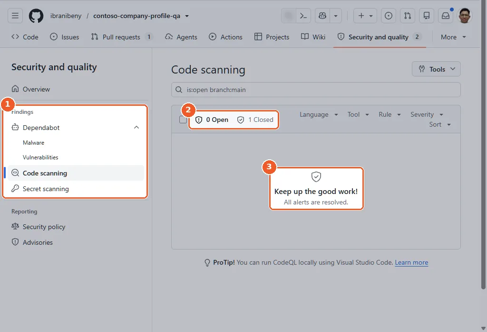
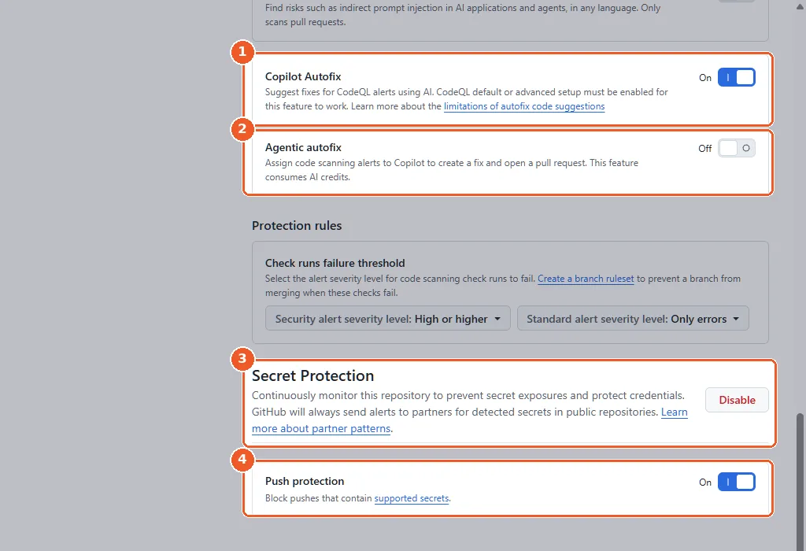
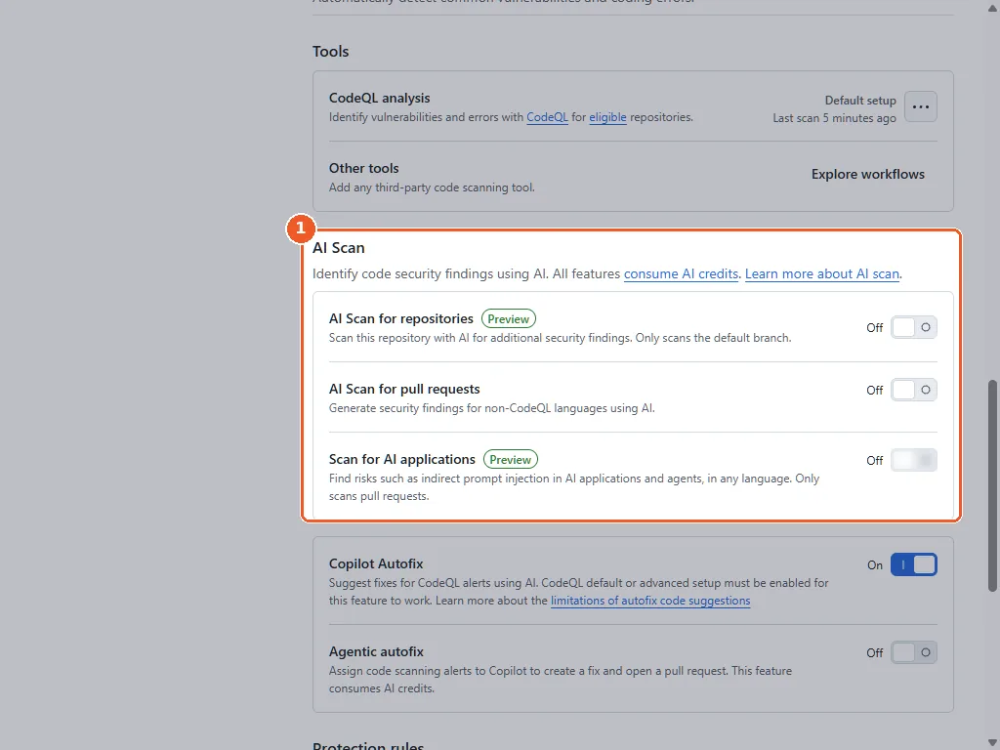
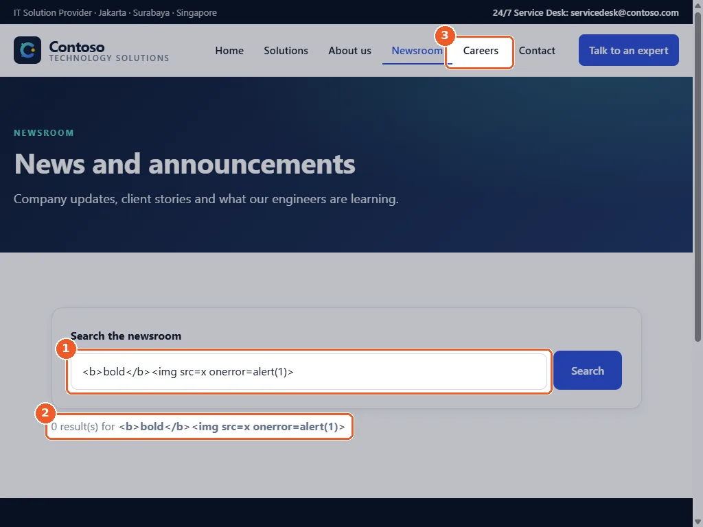

Chapter 7 · about 20 minutes
GitHub Advanced Security: the full picture
Review everything you switched on, map it to GitHub Secret Protection and GitHub Code Security, and plan how Contoso rolls it out to private repositories.
Daniel, Lina and Raka are all there. Daniel: “Show us what we have, and what it costs to do the same on the private repositories.”
Open the security picture
Open Security and quality in the repository. It summarises code scanning, secret scanning and Dependabot in one place. In an organisation, security overview rolls this up across all repositories.
gh api "repos/{owner}/{repo}/code-scanning/alerts?state=open" --jq length
gh api "repos/{owner}/{repo}/dependabot/alerts?state=open" --jq lengthOptional. It reads security alerts, which the codespace's built-in token cannot do, so run it where you signed in with your own account (how). Prints the number of open code scanning alerts, then open Dependabot alerts.


- 1Findings: Dependabot, code scanning and secret scanning in one place.
- 2Code scanning: 0 open, 1 closed.
- 3All alerts are resolved.
Check what is switched on
Open Settings → Advanced Security and review each feature: dependency graph, Dependabot, CodeQL, Copilot Autofix, secret scanning and push protection. Two more settings sit next to them: Agentic autofix, which assigns alerts to Copilot and uses AI credits (off), and Protection rules, which set the alert severity that fails a code scanning check.
gh api "repos/{owner}/{repo}" --jq .security_and_analysis
gh browse --settingsShows which security features are on, then opens the repository settings.


- 1Copilot Autofix: On.
- 2Agentic autofix: off. It assigns alerts to Copilot and uses AI credits.
- 3Secret Protection: on (the button now reads Disable).
- 4Push protection: On.
AI scan for repositories (public preview)
Where available, AI scan analyses the whole default branch on demand, including code CodeQL does not cover. It is in public preview and uses AI credits even on public repositories. In our run the settings showed three AI Scan options, all off; we left them off.


- 1AI Scan options. They use AI credits, so they stay off unless you choose to try them.
Map what you used to the GHAS products
| You used | Public repo | Private repo needs |
|---|---|---|
| Secret scanning, push protection | Free | GitHub Secret Protection |
| CodeQL code scanning, Copilot Autofix | Free | GitHub Code Security |
| Dependabot alerts and updates | Free | Included on every plan |
| Copilot Fusion, Copilot code review, agentic workflows | Copilot plan, AI credits | Copilot plan, AI credits |
See the packaging and comparison sections of the overview.
The finale
Open the live site with the new Careers page, then search the newsroom for text with HTML tags to see the fix from Chapter 5. In seven chapters Contoso went from a template to a deployed, reviewed and secured site, and every step left an audit trail in GitHub.
gh api "repos/{owner}/{repo}/pages" --jq .html_urlPrints the address of the live site. Works in the bash terminal.


- 1Search the newsroom for text that contains HTML tags.
- 2It appears exactly as typed: the XSS fix is live.
- 3Careers is in the navigation of the live site.
Wrap-up
Plan
An agentic workflow triages every issue with read-only access and safe outputs.
Build
Copilot Fusion implemented a feature from the issue, with tests.
Review
Copilot code review runs on every pull request through a ruleset.
Secure
CodeQL and Autofix fixed real XSS; push protection blocks secrets; Dependabot fixed a vulnerable dependency.
Ship
GitHub Actions deploys to GitHub Pages on every merge.
Raka signs off. Lina already has applications coming in. Daniel closes the laptop: “Same playbook for every team next sprint.”
Tested end to end on 12 Nov 2026: see the test runReport a problem with this page